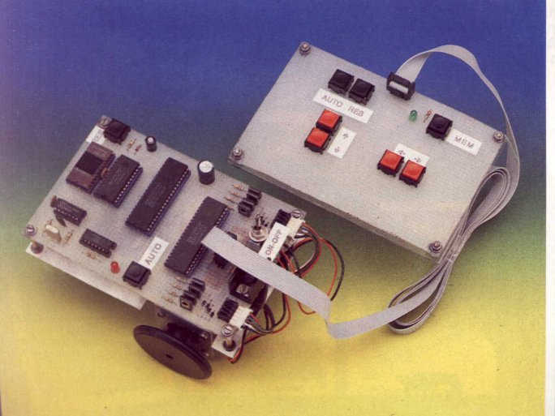

"Ugo I" is provided with:
The keypad has four keys to control the robot motion (forward,
backward, left and right),
and three more keys to:
I programmed the Z80CPU directly in assembler. This was my first experience with microprocessors and therefore I did not use any specific assembler software. Instead I wrote the instructions on paper and then loaded them in the EPROM as hexabyte codes.

Resistors:
· R1 ...... 10 Kohm
· R2,3 ... 470 ohm
· R4-9 ... 4.7 Kohm
· R10-17 ... 1 Kohm
· R18 .... 330 ohm
· R19 .... 220 ohm
Capacitors:
· C1 ...... 47 uF, 25 V electrolytic
· C2 ...... 10 nF
· C3 ..... 470 uF, 25 V electrolytic
· C4-6 .... 47 nF
Semiconductors:
· IC1 ............ CD4020
· IC2(A+B+C+D+E+F) 74LS04
· IC3 ............ LM7805
· IC4 ............ Z80 CPU
· IC5 ............ 2716 EPROM
· IC6 ............ 6116 RAM
· IC7 ............ Z80 PIO
· TR1-8 .......... BD679
· D1-9 ........... 1N4148
Other:
· XTAL1 ............. Crystal 2.4576 MHz
· 2 STEP MOTORS ..... 4 phases, 12 V, 0.16 A, 1.8 deg/step
· 8 NiCd batteries .. 1.2 V, 500 mA
Email: riccardo.rocca@hotmail.com